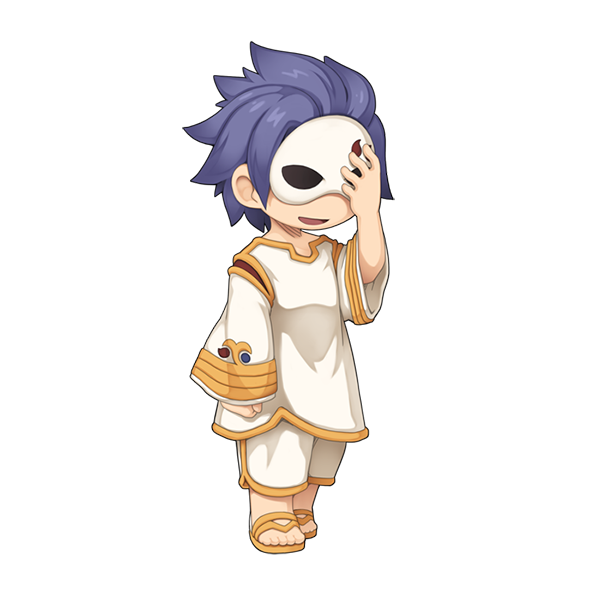

RO Data
NPC
NPC
>>その他NPC 雄一郎さん版
画像にリンクがはってあるものは、クリックすると別窓で大きめサイズが表示されます。

信者（女）
信者（男）
信者（覆面）
back
(c) Gravity Co., Ltd. & Lee MyoungJin(studio DTDS). All rights reserved.
(c) GungHo Online Entertainment, Inc. All Rights Reserved.
当コンテンツの再利用（再転載・配布など）は、禁止しています。